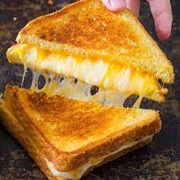

Grilled Cheese Sandwich

Bread, butter and Cheddar cheese - here's a way to make this classic sandwich in a nonstick pan.
Ingredients
- 4 slices white bread
- 3 tablespoons butter, divided
- 2 slices Cheddar cheese
Directions
- Preheat skillet over medium heat.
- Generously butter one side of a slice of bread.
- Place bread butter-side-down onto skillet bottom and add 1 slice of cheese.
- Butter a second slice of bread on one side and place butter-side-up on top of sandwich.
- Grill until lightly browned and flip over; continue grilling until cheese is melted.
- Repeat with remaining 2 slices of bread, butter and slice of cheese.